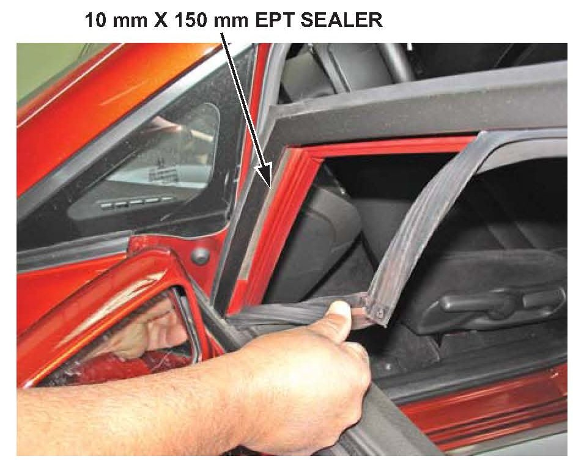
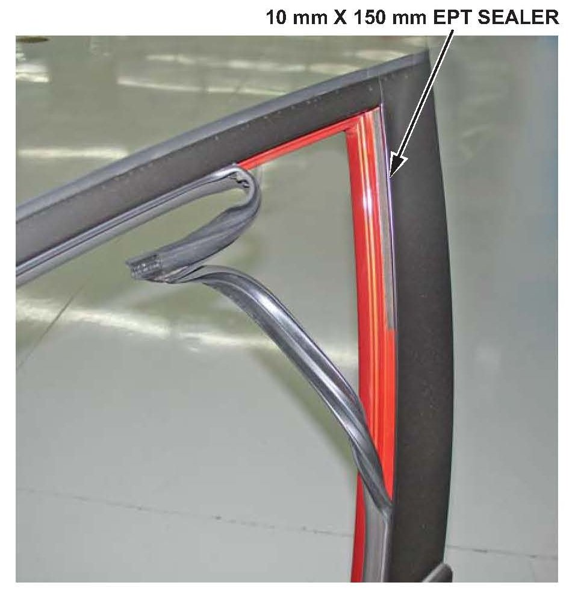

Body - Front Door Windows Rattle
09-027April 30, 2009
Applies To:
2007-09 Civic Si 4-Door - ALL
Front Windows Rattle
SYMPTOM
The front windows rattle when driving with them halfway open.
PROBABLE CAUSE
There is too much clearance between the window frame and the glass run channel.
CORRECTIVE ACTION
Install EPT sealer in the window frame to reduce the clearance.
PARTS INFORMATION
EPT Sealer (10T): P/N 06992-SA5-000, H/C 2086668
(One roll repairs about 30 vehicles.)
WARRANTY CLAIM INFORMATION
In warranty:
The normal warranty applies.
Operation Number: 8240A8
Flat Rate Time: 0.4 hour
Failed Part: P/N 72275-SNA-A01
H/C 8053498
Defect Code: 03214
Symptom Code: 03267
Skill Level: Repair Technician
Out of warranty:
Any repair performed after warranty expiration may be eligible for goodwill consideration by the District Parts and Service Manager or your Zone Office. You must request consideration, and get a decision, before starting work.
REPAIR PROCEDURE
1. Lower the front windows all the way.
2. Cut four 10 mm x 150 mm pieces of EPT sealer (10T).

3. Pull the upper front portion of the glass run channel out from the window frame. Install one piece of EPT sealer into the window frame starting at the top of the frame.
4. Reinstall the upper front portion of the glass run channel.

5. Pull the upper rear portion of the glass run channel out from the window frame. Install one piece of EPT sealer in the window frame starting at the upper corner of the glass run channel.
6. Reinstall the upper rear portion of the glass run channel.
7. Repeat steps 3 thru 6 for the other side.